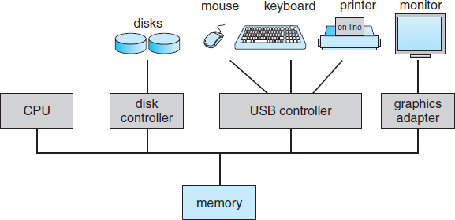

A modern general-purpose computer typically consists of one or more CPUs and a number of device controllers connected through a common bus which also provides access to shared memory
CPUs and device controllers can execute in parallel and compete for memory access
A memory controller synchronizes access to memory, ensuring orderly access